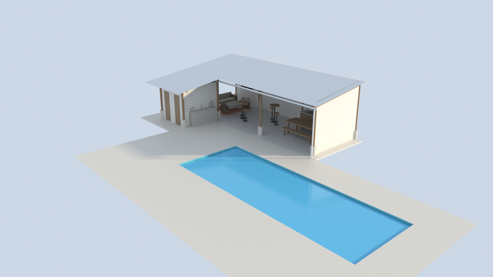

Projeto executivo · atualizado continuamente à medida que a obra avança
Quiosque da Piscina Esmeralda
Quiosque em L de 10,5 × 4,0 m ao lado da piscina, estrutura em eucalipto roliço, telhado meia-água em telha sanduíche PIR, paredes em muro tendinoso e banheiros com pia comunitária. Este site reúne as plantas técnicas, os renders 3D, o passeio em vídeo e o levantamento de materiais por fase de obra — gerados a partir do mesmo modelo 3D do projeto.

Plantas & renders
Todas as vistas renderizadas — plantas com medidas, vistas externas, interiores e estudo de sol — num slider único, por categoria.
Passeio 3DVídeo do quiosque
Passeio em vídeo pelo modelo: chegada, banheiros, área gourmet, pia comunitária e sala de estar.
DocumentaçãoCaderno de obra
Especificações técnicas, estrutura do telhado, ambientes e sequência de execução — em HTML navegável, com exportação para PDF.
OrçamentoMateriais por fase
Levantamento de materiais das 5 fases — fundação/hidráulica, estrutura, cobertura, paredes, portas e pia — pronto para cotar.
Variantes de posicionamento
Estudos de insolação com o quiosque em outras posições ao redor da laje da piscina — mantidos para referência.
Quiosque com fundo para a casa da mãe
Quiosque atravessado na ponta rasa (sul) da piscina, lado aberto voltado para a água, fundo voltado para a casa da mãe. 10h–19h.
V4Quiosque com fundo para o milho/abóbora
Espelhado para a borda oeste da laje — "a outra perna do X" em relação à V3, fundo voltado para a área de plantio de milho/abóbora. 7h–18h.
V6Quiosque com fundo para a cerca do Fernando
Posição vinda de pontos GPS reais marcados pelo usuário — substitui a V5 (mesma posição, mas com dados reais). Prova de sol de verdade (algoritmo NOAA, coordenadas reais de Alfenas-MG), cerca, café e terreno reais no entorno — 15h–19h, verão e inverno.
Não existe uma variante "V2" — a numeração pulou direto de V1 (projeto atual) para V3 na sessão em que esses estudos foram feitos. A V5 foi removida: é a mesma posição da V6, que a substitui com dados reais (V3/V4 ainda usam um cálculo solar simplificado com coordenadas de São Paulo, placeholder).